Rate Maintenance User Guide
Overview
The Rate Maintenance Dashboard in RateCube provides users with centralized control to manage carrier rates across multiple transportation modes. Users can track, edit, validate, and upload rates while ensuring compliance with organizational policies. The dashboard's modular design caters to various statuses such as Active, Draft, Future Draft Approved, Future Draft and Expired rates, each offering specific functionalities.
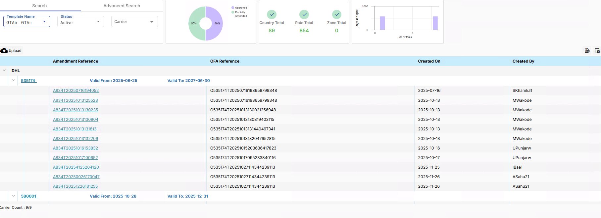 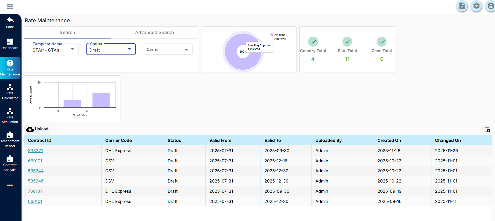Key Benefits:
- Centralized Freight Rate Management includes adding, organizing, and automating freight rates to ensure accurate and efficient shipping services across various transportation modes.
- Easy rate upload, approval, versioning, search, and automation of freight rates, covering multiple transportation modes for leading logistics service providers.
- Bulk uploads and direct row-level editing. Carrier specific rate templates for all transportation modes.
- Simplified tracking of rate validity periods.
- Real Time Rate simulations by combining rate evaluations for freight rates in RateCube and API calls with all parcel service providers
Key Features
The image above showcases the default view of the Rate Maintenance Dashboard, focusing on Active Rates:
Columns:
Active Rates View
- Amendment Reference: Links to amendments associated with rates (for Active Rates view).
- OFA Reference: Unique identifier for Offer for Amendment.
- Validity Period: "Valid From" and "Valid To" dates tracking when rates are active.
- Created On: Date when the amendment/rate was created.
- Created By: User who created the amendment/rate.
Draft Rates View
- Contract ID: Unique identifier for draft and active contracts (displayed in Draft Rates view).
- Carrier Code: Code associated with the carrier.
- Status: Current state of the rate (Active, Draft, Expired, Future Draft Approved, Future Draft).
- Uploaded By: User who uploaded the rate.
- Changed On: Date of the most recent modification.
Visualization Section:
- A pie chart displays amendment statuses, such as Approved or Partially Amended.
- Metrics include Country Total, Rate Total, and Zone Total.
Actionable Steps:
- Filter by Template, Status, or Carrier: Use the dropdown filters to narrow down the displayed data:
- Template Name (e.g., "GT_Air")
- Status (e.g., "Active", "Draft", "Expired", "Future Draft Approved", "Future Draft")
- Carrier Code
- Advanced Search Tab: Switch to the "Advanced Search" tab for more granular filtering options based on contract-specific attributes like Contract ID
- Search Tab: Use the basic search tab for quick filtering by template name and carrier.

Rate Statuses
Rates in the dashboard are categorized into three statuses:
- Active Rates: The default view showcasing rates currently in use, enabling detailed rate reviews and updates.
- Draft Rates: Accessible by selecting Draft from the status dropdown. These rates include Contract IDs, which link to the Draft Contract View for further editing.
- Expired Rates: Allows users to review historical rates for reference.
- Future Draft Approved: Upcoming rates that have been approved but not yet active.
- Future Draft: Upcoming rates pending review and approval.
Active Rates
The Active Rates section enables users to manage and view finalized contract rates. This section is accessible by clicking an “Amendment Reference” number from the main dashboard. The Active Rates dashboard provides users with a clear and interactive view of finalized rates, offering tools for advanced filtering, customization, and detailed editing capabilities:
Overview of the Main Screen:

- Amendment Reference: Unique reference number linking to the amendment for this active rate.
- OFA Reference: Associated Offer for Amendment reference number.
- Created On: Date when the rate amendment was created.
- Created By: User who created the amendment.

- Version: Current version number for the rate.
- OID: Object/rate identifier.
- Remarks: Additional notes or special conditions.
- Rate Header ID: Unique identifier for the rate header.
- OFA Reference: Associated OFA reference number.
- Valid
- RFAInd: RFA (Request for Amendment) indicator.
- Valid From: Rate effective date [Additional columns available through Column Chooser].
Filter Tools
- Advance Search Filter Tools:
- Origin Service
- Destination Service
- Lane ID
- RateCube ID
- Container Type
- Search Filter Tools:
- Origin Country: Filter by origin country
- Origin City: Filter by origin city
- Destination Country: Filter by destination country
- Destination City: Filter by destination city
- Commodity: Filter by commodity type
- Service Level: Filter by service level
- Region of Ownership: Filter by region
- Column Chooser: Located to the right of the Advanced Search, this tool allows users to hide or display specific columns for a tailored view.
- Access Buttons:
- "Contract History" Button: Opens a view showing contract history and action timeline
- "Rate Card Details" Button: Opens the detailed rate view
- "Create Task" Button: Allows creation of tasks related to specific rates
Rate Card Details: Viewing and Editing Charges
Clicking the "Rate Card Details" icon for any active rate opens the Rate Card Details view, a dedicated interface for viewing comprehensive rate information and making amendments.
- Comprehensive Rate Details:
- Origin and Destination Information: Cities, postal codes, and countries.
- Carrier and Service Level Information: Carrier details and applicable service levels.
- Charge Breakdown: Detailed view of Base Rates, surcharges, and other cost components.
- Edit Charges - Creating Amendments:
- Users can directly update rates within the detailed view.
- When modifications are made, changed values are automatically highlighted in red for visibility.
- Users can save updates as part of a new Offer for Amendment (OFA).
- Upon saving, the edited rate automatically moves to the Draft Rates section with a generated OFA reference number.
- This ensures complete traceability of rate changes with a unique amendment reference.
The Active Rates section provides a high-level overview and granular detail, enabling users to efficiently manage finalized rates and perform necessary amendments with complete traceability.
Draft Rates
The Draft Rates section in the Rate Maintenance module is designed to facilitate the review, revision, and approval processes for draft lanes before finalization. This section provides users with powerful tools for filtering, viewing, and editing draft rates to meet operational needs. Below is a detailed breakdown of its features and functionalities:
Table Overview:
- Table Columns:
- Contract ID: The unique identifier for the draft contract.
- Carrier Code: Code of the carrier associated with the rate.
- Status: Shows "Draft" status.
- Valid From: Date when the rate becomes effective.
- Valid To: Date when the rate expires.
- Uploaded By: User who uploaded the rate.
- Created On: Date when the contract was created.
- Changed On: Date of the most recent modification.
- Additional Columns Available: Users can access additional rate details through:
- Version: Current version number for the rate.
- OID: Object/rate identifier.
- Remarks: Additional notes or special conditions.
- Rate Header ID: Unique identifier for the rate header.
- OFA Reference: Associated OFA reference number.
- Valid
- RFAInd: RFA (Request for Amendment) indicator.
- Valid From: Rate effective date [Additional columns available through Column Chooser].
Each row represents a unique draft contract. To view lane-level details within a contract, users must click into the contract to access the detailed rate breakdown.
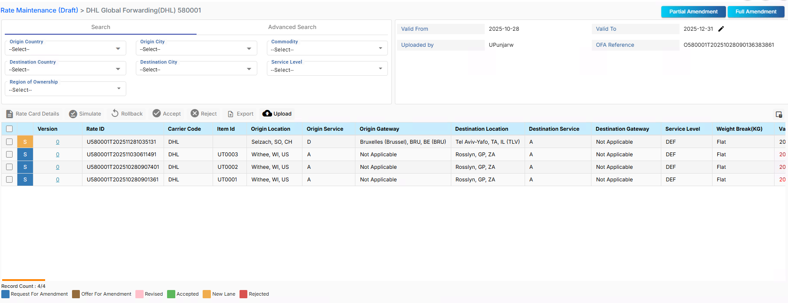Filter Tools:
- Search Tab: Basic template and carrier filtering
- Advanced Search Tab: Enables advanced filtering capabilities
- Multiple filter options available including Origin Country, Origin City, Destination City, Commodity, and Service Level
Action Buttons and Controls:
- Rate Management Actions:
- Rate Card Details (Document Icon): Opens the Detailed Rate View for comprehensive viewing and editing of rate information. This includes origin, destination, base rates, surcharges, and charge breakdown.
- Simulate (Calculator Icon): Simulates rate changes and compares draft rates with active rates before committing to changes.
- Rollback (Undo Icon): Reverts the selected lane to its previous state if changes were made.
- Accept (Checkmark Icon): Approves the selected draft lane(s) as-is, moving them toward finalization.
- Reject (X Icon): Rejects the selected draft lane(s) if they do not meet expectations or contain errors.
- Upload (Cloud/Upload Icon): Upload updated or corrected rate files for specific lanes, useful for bulk corrections.
- Bulk Operations: Select multiple lanes using checkboxes and perform actions (Accept, Reject, Upload) on all selected lanes simultaneously.
- Amendment Buttons:
- Partial Amendment: Creates an amendment for only the selected/modified lanes while keeping others in draft status.
- Full Amendment: Creates an amendment for all lanes in the draft, moving them all to active status simultaneously.
Rate Card Details: Editing Lane Details
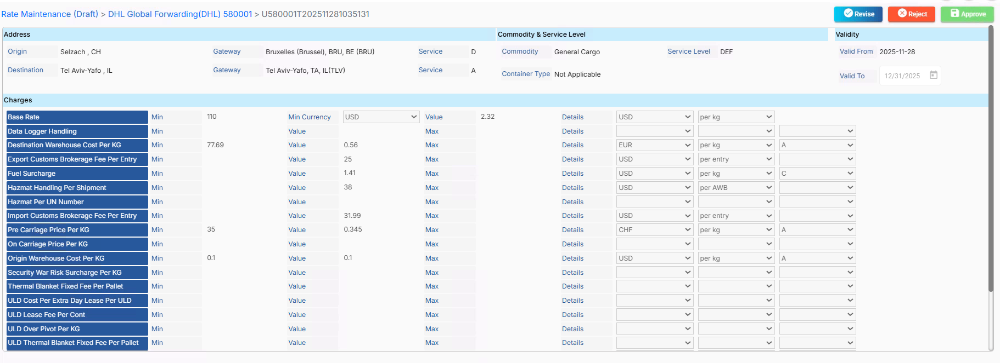Clicking the "Rate Card Details" Icon opens the Detailed Rate View, a dedicated interface for managing lane-specific details. This view offers enhanced functionality for shippers:
Editable Fields:
- The shipper can adjust base charges, fuel surcharges, and other cost-related parameters. Any changes made here are tracked in the lane history.
- When a user modifies a lane, changed values are automatically highlighted in red to indicate updates.
- This ensures that users can quickly identify modifications before submitting them for approval.
Actions Available:
- Reject: Decline the rate if it does not meet expectations.
- Approve: Approve the rate as proposed.
- Revise: Modify the rate to create a counter-offer and generate a unique OFA number for acceptance or rejection by the carrier.
Amendment Process
The Draft Rates section supports both Partial and Full Amendments to ensure flexibility and precision in rate finalization:
Partial Amendments:
- Shippers can accept only a subset of updated lanes. For example, if 10 lanes are submitted by the carrier, the shipper may accept 5 lanes, rejecting or revising the rest.
- Revised lanes are sent back to the carrier for approval or rejection.
Full Amendments:
- All updated lanes are accepted simultaneously, finalizing the entire contract.

Shipper and Carrier Responsibilities:
Shipper Actions:
- Shippers can Reject, Accept, or Revise rates based on their requirements. Revising a rate generates a Partial Amendment for further carrier review.
Carrier Actions:
- Carriers can only Accept or Reject counter-offers or amendment requests sent by the shipper.
Rate Simulation
Overview
The Rate Simulation feature within Rate Maintenance allows users to simulate and compare rates under different scenarios to analyze cost impacts before committing to changes.
- Draft Rates Simulation: Users can select specific lanes from draft rates to compare current rates with changed/updated rates, allowing analysis before acceptance or revision.
- Active Rates Simulation: Users can revise rates and simulate the difference between new proposed rates and currently active rates. If satisfied with the simulation results, the system automatically generates an Offer for Amendment (OFA).
This feature provides comprehensive cost analysis under different scenarios, enabling informed decision-making before rate changes are finalized.
Accessing Rate Simulation
To access the Rate Simulation feature:
- Navigate to Rate Maintenance and select the appropriate status (Draft).
- Click on a Contract ID to open the contract detail view.
- Select any 'Draft Rate' & Click the "Simulate" button in the action buttons bar.
- The Rate Simulation module will open with simulation options.
Step 1: Simulating Rates for Draft Templates
Description: Users access the Rate Simulation module by selecting a draft template. Within the draft template, specific lanes can be selected to view and compare current rates with updated or changed rates.
Key Process:
- Select the draft template to simulate.
- Choose specific lanes to include in the simulation.
- Select a Currency (e.g., USD, EUR, GBP) for rate comparison and calculations.
- Select a Shipment Profile (Low, Medium, or High):
- Low: 10 shipments/month
- Medium: 100 shipments/month
- High: 500 shipments/month
- Profiles ensure rate calculations reflect annual shipment charges.
- Review the simulated cost comparison.
Step 2: Comparing Rates for Draft Templates
Description: Once lanes and shipment profiles are selected, the system displays a detailed rate comparison showing:
- Draft rate charges displayed side-by-side with active rate charges.
- Detailed breakdowns including base rates, fuel surcharges, handling fees, and other applicable charges.
- Clear visualization of differences between draft and active rates.
- Percentage or absolute value differences highlighted for quick analysis.

Step 3: Revising Rates for Active Templates
Description: For active rates, users can simulate changes by modifying:
- Base rate amounts.
- Fuel surcharge percentages or amounts.
- Handling charges and other cost parameters.
- Additional service-related charges.
Like draft simulations, select shipment profiles to reflect monthly shipment volumes and calculate annual charges. Revised rates are then compared to currently active rates to understand the impact of proposed changes.
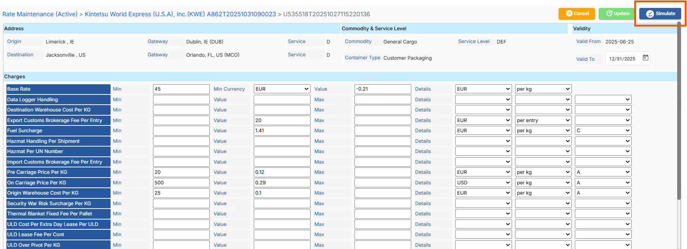Step 4: Simulating and Comparing Active Rates
Description: After proposing rate revisions, the system generates a detailed comparison showing:
- Simulated/revised rates vs. current active rates.
- Complete charge breakdown for side-by-side analysis.
- Cost variations and differences highlighted.
- Total annual impact analysis based on selected shipment profile.
Step 5: Accepting the Simulation and Creating an OFA
Description: Once satisfied with the simulation results:
- Users can accept the revised rates.
- Upon acceptance, the system automatically generates an Offer for Amendment (OFA).
- The OFA contains all revised rates for carrier review and approval.
- The OFA reference number is generated for tracking the amendment through the workflow.
- Users can then proceed with the OFA submission process for carrier negotiation.
Rate Upload
The Bulk Upload functionality in Rate Maintenance allows users to upload multiple rates simultaneously, streamlining the process of updating rate data for Air, Ocean, and Road shipments. Using standardized templates, users can efficiently input large amounts of data, minimizing manual entry errors.
Steps for Bulk Upload
- Access the Rate Maintenance Module: Navigate to RateCube and select Rate Maintenance from the sidebar.
- Choose Template: Select the required template for the upload from the dropdown menu (e.g., NA, GT_Air, or GT Ocean).
- Prepare the File: Populate the Excel or CSV template with the rates to be uploaded, ensuring all required fields are complete.
- Upload the File: Click the Submit button for processing.
- Submit the file for processing.
- Several carriers will be detected even if the shipper uploads one file.
- Validate and Review: Verify and Confirm the Rate Upload summary:
- When the Rate file uploads successfully, you will receive a message saying that "The files have been uploaded successfully"
OFA and RFA Processes in Rate Maintenance
The OFA and RFA processes play a critical role in managing rate amendments between carriers and shippers. Below is a detailed guide to these processes, including actions, notifications, and key indicators.
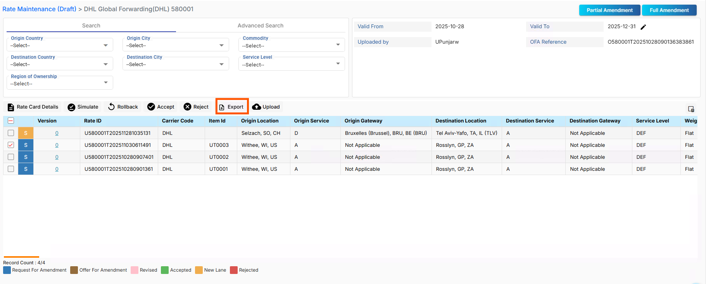Offer for Amendment (OFA)
Process Overview:
- Initiation: A carrier uploads an OFA, and a unique reference number is generated for tracking.
- Shipper Notification: A task is created, and an email notification is sent to the shipper.
- Shipper Actions:
- Approval: The shipper can approve the OFA, creating a Full Amendment.
- Counteroffer: The shipper can counter the OFA, requesting revised rates.
- Final Steps:
- The carrier can accept the counteroffer or upload revised rates based on the shipper's request.
Key Indicators for Actions:
- Actions taken by shippers are marked with an S indicator, while carrier actions are denoted by a C.
- Different colors represent various statuses:
- Blue: Request for Amendment (RFA)
- Orange: Offer for Amendment (OFA)
- Green: Accepted
- Yellow: Awaiting Approval
- Red: Rejected
Request for Amendment (RFA)
Process Overview:
- Initiation: The shipper changes rates and sends an RFA to the carrier.
- Carrier Notification: An email notification is sent to the carrier for review.
- Carrier Actions:
- Acceptance: The carrier can accept the RFA.
- Upload Revised Rates: The carrier can upload new rates if changes are required.
Key Features:
- Similar to the OFA, the RFA process uses indicators and colors to reflect the status of actions on the platform.
Steps to Create and Process OFA
Scenario 1: Full Counter OFA Acceptance Process
This process involves:
Step 1: Initiate the OFA Process
The process begins when the carrier initiates the OFA by selecting the relevant contract ID. This step ensures the correct contract is identified for amendments. Once selected, the carrier prepares to identify specific rates for amendment.
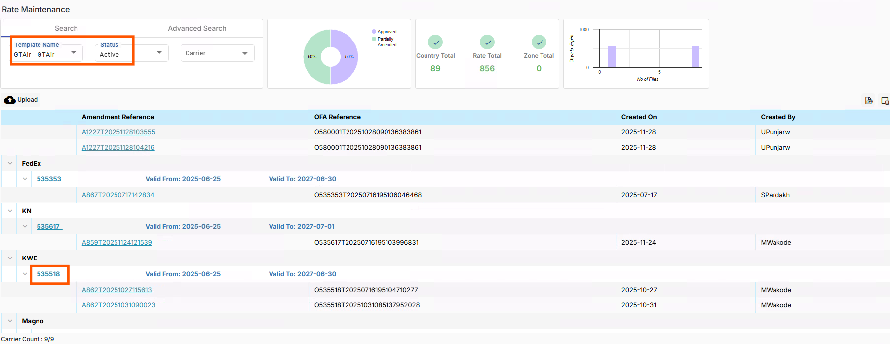Step 2: Select and Export Rates for Amendment
The carrier filters and selects the specific rates that require amendments. This can be done based on criteria such as contract validity, service levels, or origin/destination cities. After selecting the applicable rates, the carrier exports the data to make modifications offline.
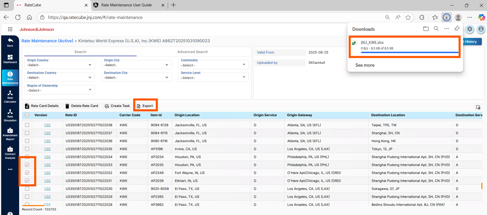Step 3: Update and Upload Amended Rates
The carrier updates the exported file with the necessary amendments, such as rate changes or additions. The amended file is then uploaded back into the system by selecting the appropriate template, validity period, and rate file. A popup message confirms the successful upload of the amended rates.
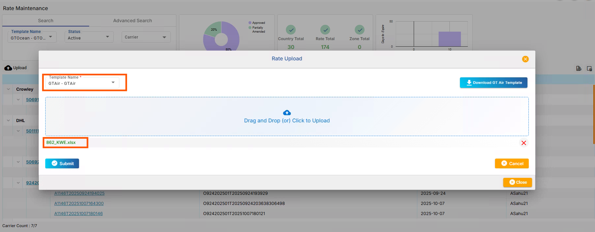Step 4: Shipper Reviews and Counters
Once the amended rates are uploaded, they become available to the shipper for review. Each amended rate is associated with a unique Reference ID, ensuring traceability. The shipper has the option to counter specific rates or accept them as-is. Countering involves proposing alternate rates and saving them for the carrier to review.
Step 5: Carrier Accepts or Rejects Countered OFA
The carrier reviews the countered OFA rates provided by the shipper, including any modifications or alternate proposals. After reviewing, the carrier decides whether to accept or reject the countered rates. If accepted, the system updates the rate status, reflecting the carrier’s decision.
Step 6: Final Acceptance and Activation
After the carrier’s acceptance, the shipper performs a final review and accepts the updated rates using the Full Amendment option on the bottom right-hand section of the dashboard. Once this step is completed, the amended rates are activated and appear under the "Active Rates" section with the amendment reference ID.
Scenario 2: Revised OFA After Counter Rejection
This process is initiated when:
- The carrier rejects the shipper’s countered OFA, identifying the need for revised amendments.
- The carrier must upload new rates, which are subject to a second review and acceptance by the shipper.
- The scenario ends with the activation of the amended rates after mutual agreement.
Step 1: Initiate the OFA Process
The carrier selects the contract ID for which the OFA is being initiated and identifies the records requiring amendments. The selected records are exported to facilitate offline modifications.
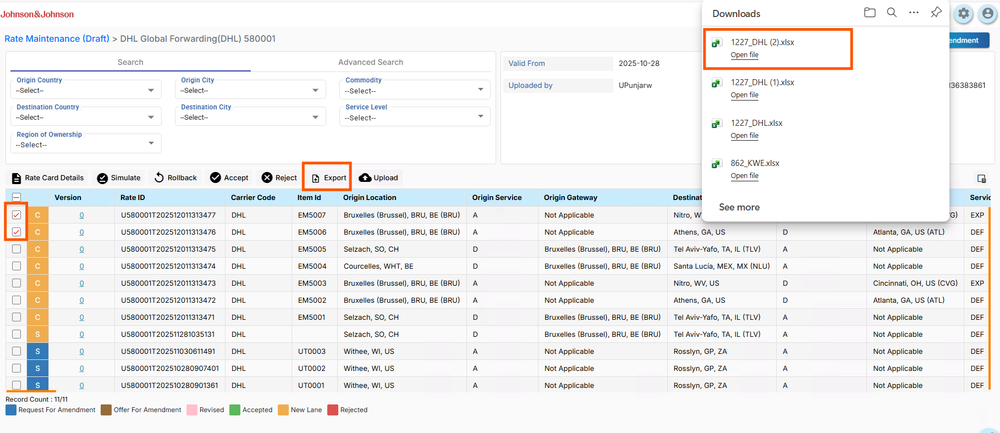Step 2: Upload Amended Rates
The carrier uploads the amended rates file using the upload function. Upon successful upload, a popup confirms that the file has been uploaded successfully. This ensures that the new rates are compatible and ready for further review.
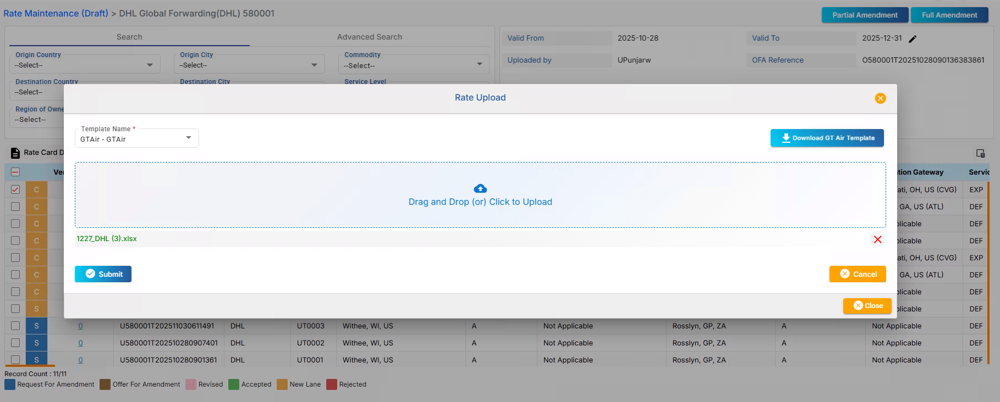 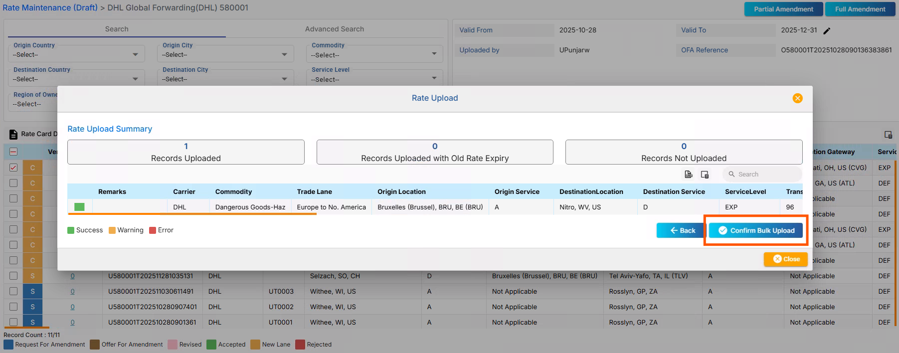 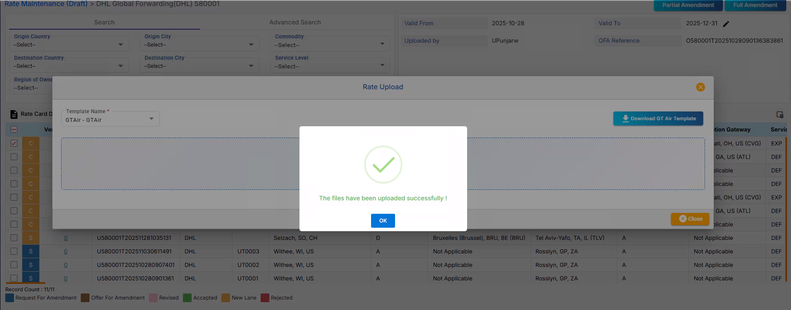Step 3: Update Draft Status
The system updates the OFA records with a "DRAFT" status after the amended rates are uploaded. A unique ID is assigned to each record to track changes during the amendment process.
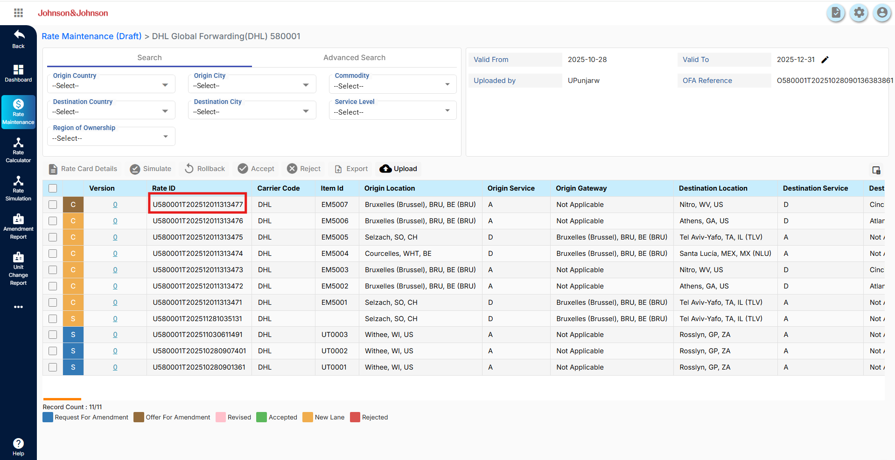Step 4: Shipper Reviews and Updates Counter
The shipper receives the updated OFA and reviews it. They update the counter OFA if needed, involving two steps: requesting amendments and revising the proposal. These updates are sent back to the carrier for further review.
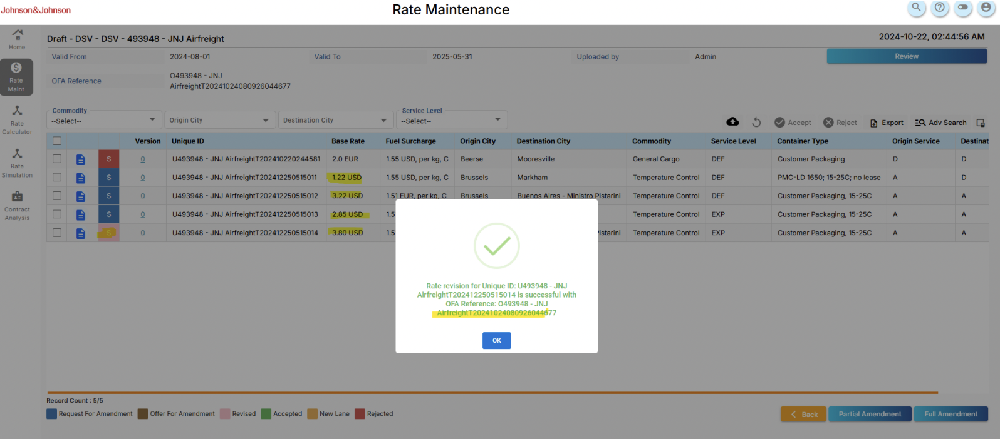Step 5: Carrier Rejects Countered OFA
The carrier reviews the countered OFA provided by the shipper and chooses to reject the proposed rates. A rejection popup is displayed, and the status of the OFA is updated to reflect the rejection.
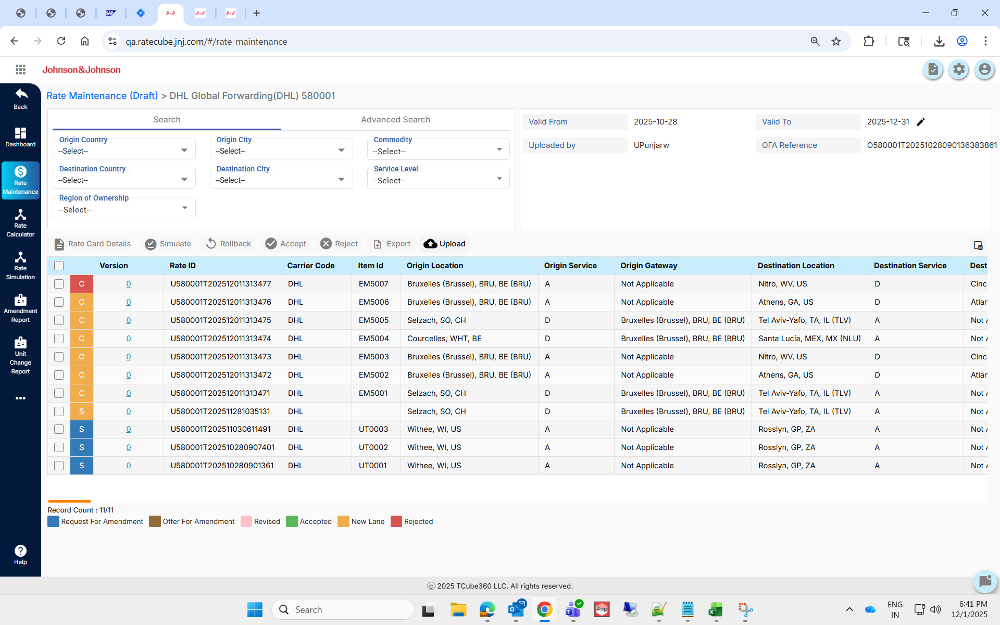Step 6: Export and Submit New Rates
The carrier exports the rejected OFA records and prepares new rates in response to the shipper’s counter. The updated rates file is uploaded, and the OFA is submitted for approval by the shipper.

Step 7: Shipper Final Review and Activation
The shipper performs a final review of the revised OFA and accepts it. During this step, the system transitions the status of the revised OFA records from brown (Offer for Amendment) to green (Accepted) to indicate successful acceptance. A popup message confirms this action, ensuring the shipper acknowledges the updated rates. The shipper then activates the rates using the "FULL AMENDMENT" option on the Rate Maintenance dashboard.
Step 8: Rates Become Active
The newly activated rates appear under the "Active Rates" section in the system. These rates are referenced by the most recent OFA amendment ID, completing the process.
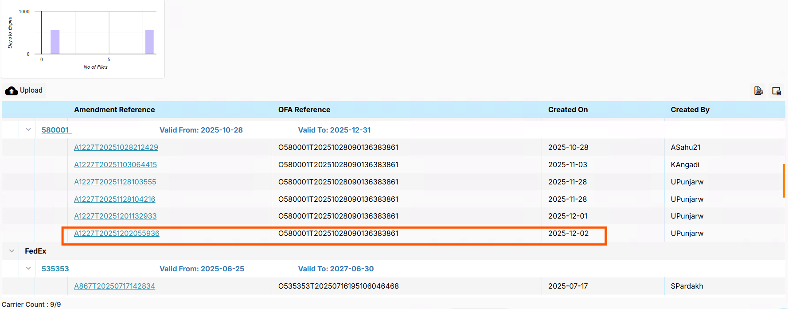Scenario 3: Partial OFA Acceptance and Counter
This process is initiated when:
- The carrier uploads the OFA, and a unique reference number is generated for the OFA.
- The shipper accepts part of the OFA while countering the remaining lanes.
- Based on the shipper's actions, one or two amendments are created:
- One amendment for accepted lanes if the shipper processes a partial amendment.
- Another amendment for the countered lanes.
- The carrier receives and accepts the counter partial OFA, completing the process.
Step 1: Initiate the OFA Process
The carrier begins the OFA process by selecting and exporting the records requiring amendments. These records can also be manually updated within the system. The system generates a unique reference number for the OFA.
Step 2: Draft Status Update
After the OFA upload, the contract receives a "DRAFT" status. Each OFA line is updated with a unique OFA reference and record ID, ensuring traceability for the amendment process.
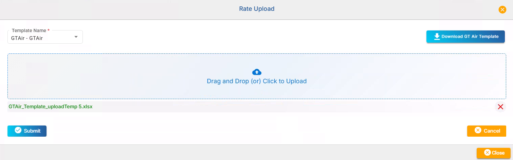 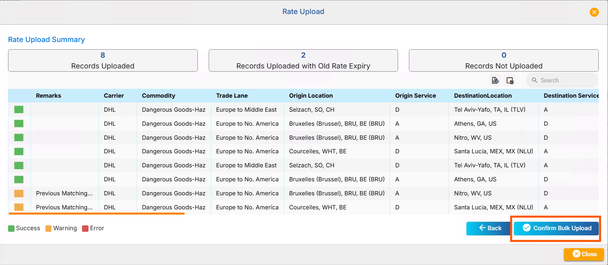Step 3: Shipper Receives and Processes the OFA
The shipper reviews the OFA and accepts part of the lanes. For the accepted lanes, the shipper creates a partial amendment, generating a unique reference number. For the remaining lanes, the shipper counters by proposing alternate rates and saving them for the carrier’s review.
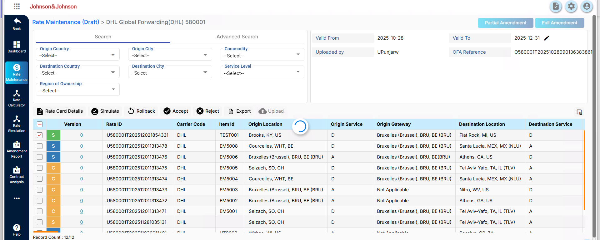 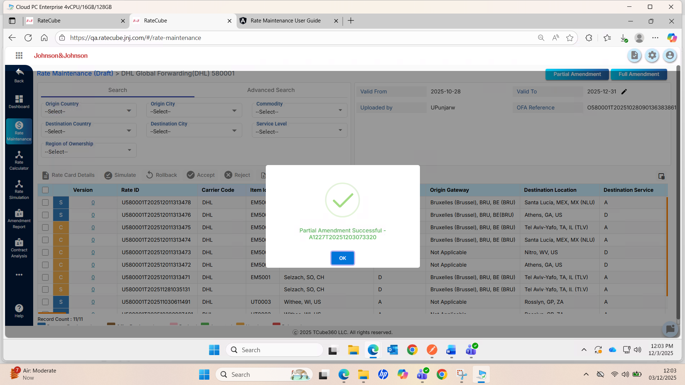Step 4: Shipper Creates Partial Amendment
The shipper creates a partial amendment for the accepted lanes. The system generates a unique amendment reference for these accepted lanes while retaining the original OFA reference for the countered lanes. The partial amendment gets an active status for the accepted lanes.
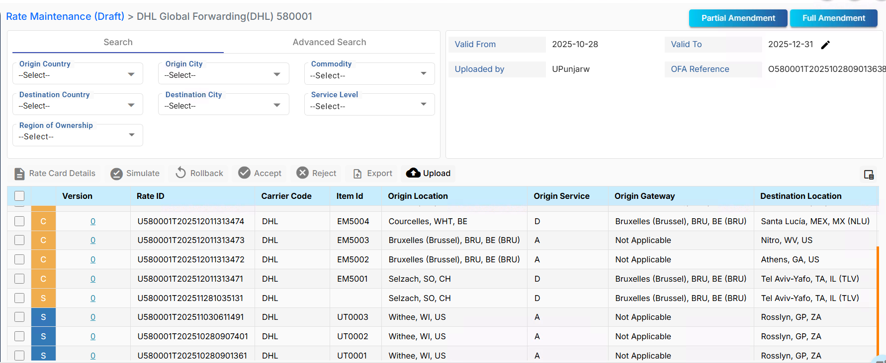
Step 5: Carrier Reviews and Accepts Counter Partial OFA
The carrier reviews the countered lanes submitted by the shipper. Upon accepting the counter, the system updates the status of the counter partial OFA to reflect the carrier’s decision.
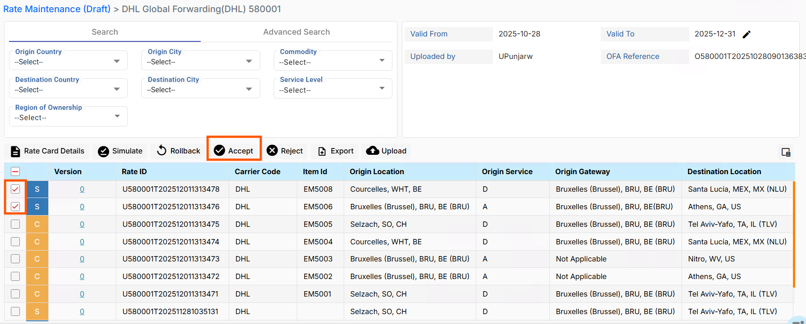Step 6: Shipper Finalizes and Activates Rates
The shipper approves the counter partial OFA and amends the contract using the partial amendment option. A popup confirms the successful activation of the amended contract, and the rates transition to "Active" status in the system.
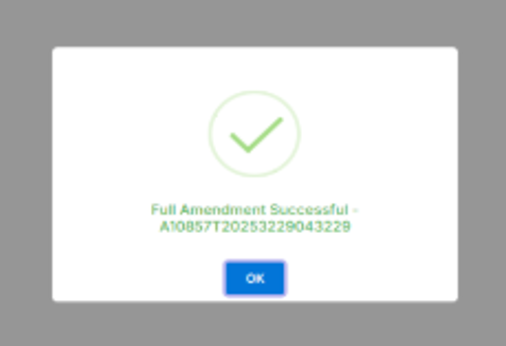Scenario 4: Revised OFA and Partial Counter Rejection
Overview
This process is initiated when:
- The carrier uploads an OFA, generating a unique reference number.
- The shipper receives the OFA, accepts part of it, and counters the remaining lanes.
- The shipper creates amendments for accepted lanes, leading to one or more amendments.
- The carrier rejects the RFA and uploads revised rates for shipper review.
- The shipper accepts the revised OFA, finalizing the process.
Step 1: Initiate the OFA Process
The carrier starts by selecting the relevant contract ID for the OFA. Records are identified for amendments and exported for offline modification. The system generates a unique reference number for the OFA.
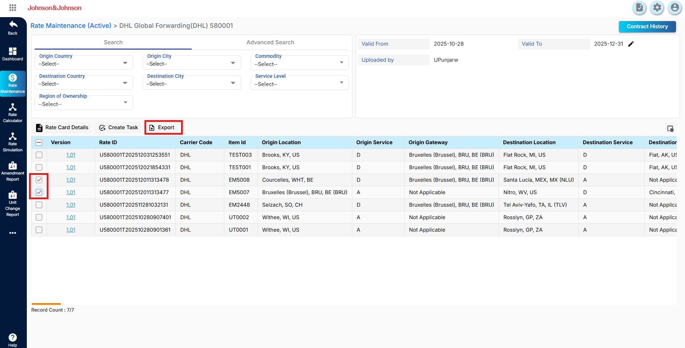Step 2: Upload Amended Rates
The carrier uploads the OFA, which includes new rates, and a unique reference number is generated. A popup confirms the successful upload of the amended rates.
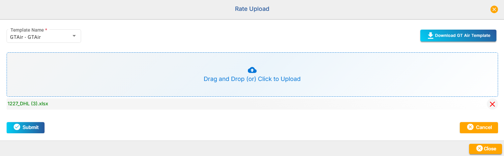 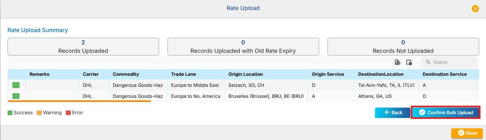Step 3: Draft Status Update
The OFA records are updated with a "DRAFT" status. Each line receives a unique OFA reference and record ID for tracking throughout the amendment process.

Step 4: Shipper Receives and Processes the OFA
The shipper reviews the OFA, accepts certain lanes, and counters the remaining ones. For accepted lanes, the system updates them with an "Accepted" status. For countered lanes, the original OFA reference is retained for further carrier review. A green popup message will appear once selected lanes are approved.
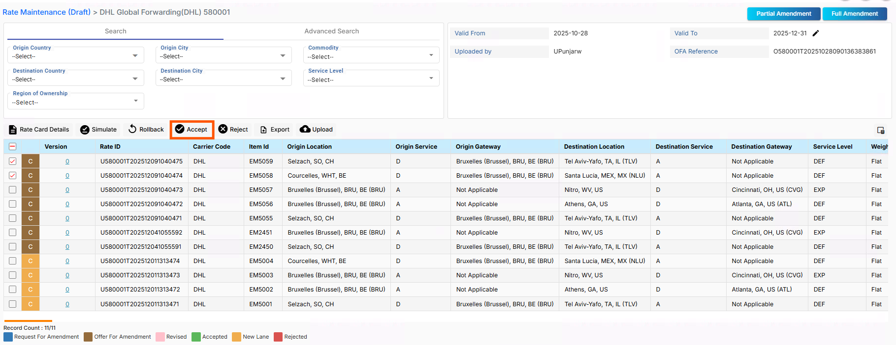Step 5: Shipper Creates Partial Amendment
The shipper creates a partial amendment for accepted lanes. This results in a unique amendment reference ID for the accepted lanes while retaining the original OFA reference for countered lanes. The partial amendment gets an active status for the accepted lanes.
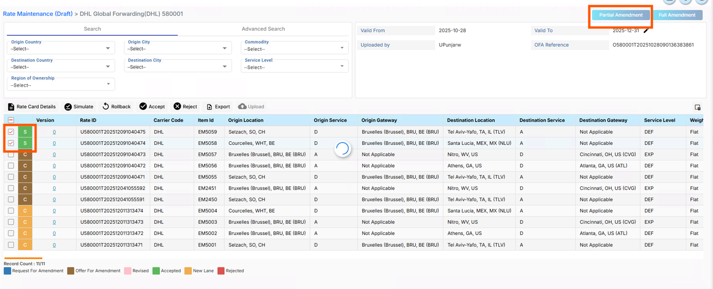 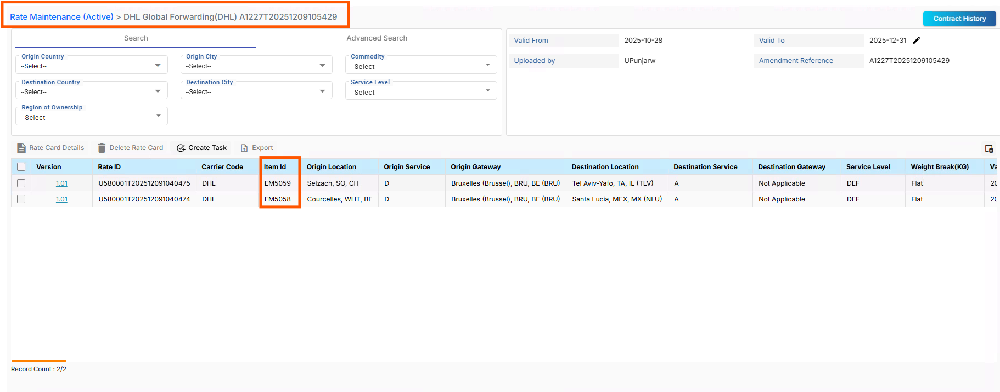Step 6: Carrier Rejects Counter Partial OFA
The carrier reviews the counter partial OFA and rejects the shipper’s counter proposal. The system reflects this action with a rejection status and a confirmation popup message.
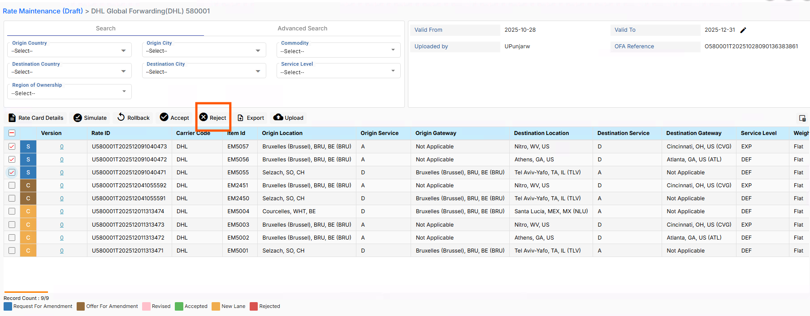 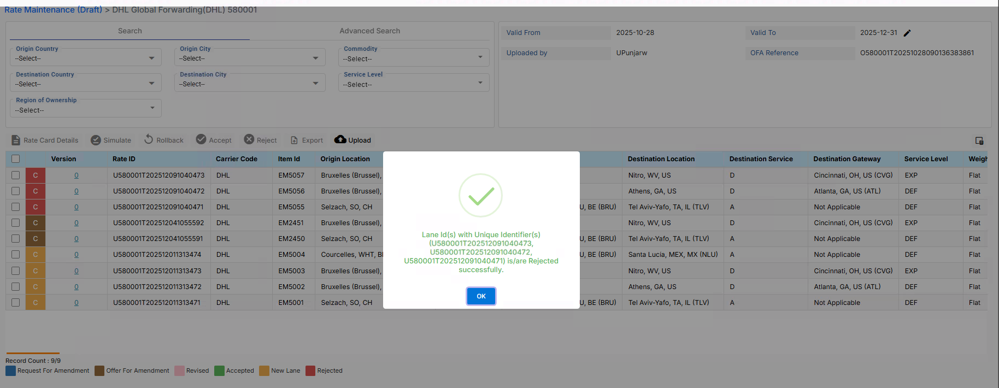Step 7: Shipper Accepts and Finalizes Revised OFA
The shipper reviews the revised OFA. Once accepted, the counter proposal transitions into the "Accepted" status. The system confirms the acceptance with a popup message, reflecting the successful acknowledgment of the revised rates.

Step 8: Shipper Activates Revised Rates
The shipper finalizes the accepted counter OFA using the partial amendment option. This activates the updated contract. A confirmation popup is displayed, showing the successful activation of the contract amendment, which is now visible in the system in "Active Rates."
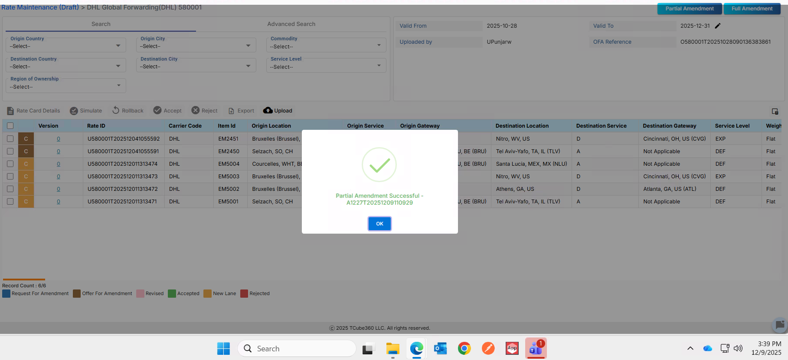Amendment Reports
Overview
The Amendment Reports section in RateCube allows users to visualize, analyze, and manage linked amendments and the underlying Offer for Amendments (OFAs) and associated changes. This feature provides critical insights into the contract amendment hierarchy and lane-level details, aiding in accurate decision-making and traceability.
When to Use Amendment Reports
- At any point when a user needs to review amendments linked to specific contracts or carriers.
- To understand the history and details of underlying OFAs for decision-making.
- To filter and navigate the contract hierarchy based on various parameters such as template name, carrier, contract ID, rate ID, lane ID, status, and amendment date range.
1. Accessing the Amendment Report Module
Users can access the Amendment Report module directly from the Amendment Report Menu in the left sidebar. This provides a starting point for viewing amendment details and filtering data.
2. Filtering Amendments
Users can filter amendments using various criteria through two search modes: Search (basic filters) and Advanced Search (detailed filters). This flexibility ensures that users can narrow their focus to specific data points as needed.
Search Tab Filters:
- Template Name (Required): Select the rate template to filter amendments by template type (e.g., GT_Air, NA, GT Ocean).
- Carrier (Optional): Narrow down results based on the carrier handling the OFAs.
- Contract ID (Optional): Review specific contracts linked to amendments by entering the contract identifier.
- Status (Optional): Filter amendments by status. Available options include New, Updated, and Expired amendments.
- Amendment Date Range (Required): Focus on amendments made within a particular timeframe. Select start and end dates using the date picker.
Advanced Search Tab Filters:
For more granular searches, use the Advanced Search tab to filter by specific rate and lane identifiers:
- Rate ID (Optional): Filter amendments by specific Rate Cube identifier to find amendments related to a particular rate.
- Lane ID (Optional): Filter amendments by specific lane identifier to locate amendments for particular shipping lanes.
Note: At minimum, you must select a Template Name and Amendment Date Range to perform a search. Additional filters can be combined to narrow results further.
3. Viewing Contract Hierarchy
After performing a search, the system displays a list of contract hierarchies within the Amendment Report table. Each row represents a specific contract with its amendment details.
Key Details:
- Contract ID: The unique identifier for the contract.
- Version: The current version number of the amendment.
- Created On: The date and time when the amendment was created.
- Created By: The user who created the amendment.
These columns provide a high-level overview of amendments. Click on a Contract ID row to view underlying lane details and additional information about the amendment.
4. Viewing Underlying Lanes
When a user clicks on a contract row in the Amendment Report table, the system displays the underlying lane details in expanded format. This view provides granular information about each lane associated with the amendment, including:
- Lane ID: The unique identifier for the lane.
- Origin and Destination Cities: Indicates the shipment path (e.g., New York to Los Angeles).
- Origin Service: The service type at the origin location.
- Destination Service: The service type at the destination location.
- Service Level: Shows the type of service applied to the amendment (e.g., Express, Standard).
- Customer Type: Indicates whether the shipment is commercial, residential, or other types.
- Rate Information: Displays base rates, surcharges, and other charge details for the lane.
- Other Details: Additional columns such as commodity type, container type, and weight breaks for further insights.
5. Status Indicators Legend
The Amendment Report uses color-coded status indicators to quickly identify the state of amendments:
- ■ New (Green): Recently created amendments that have not yet been processed.
- ■ Updated (Orange): Amendments that have been modified or are currently being processed.
- ■ Expired (Red): Amendments that have expired or are no longer active.
The legend appears at the bottom of the Amendment Report table for quick reference.
Task Visualization
Overview
The Task Visualization feature in the Rate Maintenance module enables users to create, manage, and assign tasks related to specific contract lanes. This functionality streamlines communication between shippers and carriers by allowing comments, file uploads, and task tracking within the system. Tasks can be assigned to a carrier user with email notifications sent to alert them.
Step 1: Navigating to the Active Template
Description:
- Navigate to the Rate Maintenance module and select a template with an Active status. This is the first step to access any specific contract ID for which a task needs to be created.
- Use the displayed table to select relevant contract IDs or lanes.
Step 2: Selecting a Lane and Creating a Task
Description:
- Select a specific lane from the table to work on.
- Click on the Create Task button to initiate a task related to the selected lane.
- This functionality allows the shipper to target specific lanes for updates or comments.
Step 3: Adding Comments and Uploading Questionnaire
Description:
- After clicking on Create Task, a task creation pop-up appears.
- The shipper can:
- Add comments to provide specific instructions or details.
- Upload a questionnaire file in CSV format for additional data input or queries.
- Assign the task to the respective carrier user from the dropdown menu.
- Once completed, click Save to finalize the task creation.
Step 4: Task Details and Email Notification
Description:
- Once the task is saved, the system sends an email alert to the assigned carrier user.
- The created task can be reviewed in the Opened Task Details section.
- This view includes:
- Comments entered by the shipper during task creation.
- Lane-specific details such as commodity type, origin, and destination locations.
- Assigned users can update the task status or respond to comments as needed.
Task Status Management - Additional Info
Task Statuses:
- Open: Task has been created and assigned but not yet started.
- In Progress: Assigned user is actively working on the task.
- Pending Carrier Response: Waiting for carrier feedback or action.
- Resolved: Task has been completed.
- Closed: Task is archived.
Best Practices:
- Keep task descriptions clear and specific to the lane.
- Attach relevant files (questionnaires, specifications) when needed.
- Include deadline information in task comments if urgent.
- Track task history for compliance and audit purposes.
- Use task comments for back-and-forth communication rather than emails.
Integration with Amendment Process:
Tasks can be created at any stage of the rate amendment process:
- During draft rate review to request carrier clarification.
- Before OFA submission to gather missing information.
- During partial amendment scenarios to coordinate on disputed lanes.
- For follow-up actions after rate acceptance.
Unit Change Report
The Unit Change Report in RateCube is designed to help users quickly identify if any unit or currency has changed in the rate card. This report is crucial for detecting modifications in **unit of measurement (UOM) or currency values, ensuring that any unintended changes are caught before they impact financial calculations.
Purpose of the Unit Change Report
- 🔹 Tracks unit-based modifications** such as changes from grams (gm) to kilograms (kg) or **currency updates.
- 🔹 Ensures that carriers do not make unintentional unit shifts, which could lead to significant cost discrepancies.
- 🔹 Provides a clear side-by-side comparison** of previous and modified values, helping users audit rate changes effectively.
How to Use the Unit Change Report
1. Access the Unit Change Report
Navigate to the Unit Change Report from the OFA and RFA Processes menu. This will open the report screen displaying relevant contracts and rate amendments.
2. Reviewing Unit and Currency Modifications
The report highlights any changes in unit or currency fields. Users can see the before-and-after values, making it easier to detect shifts. For example:
- If a carrier updates a rate from grams (gm) to kilograms (kg) but forgets to adjust the value, it could result in a major difference in cost.
- Similarly, a currency change from USD to EUR without correct conversion can cause incorrect invoicing.
3. Applying Filters
Users can **filter the report** based on:
- Template Selection: Choose a specific rate template.
- Date Range: Select the period for which changes need to be reviewed.
- Unit Type or Currency: Narrow down changes to specific unit modifications.
4. Identifying Critical Discrepancies
Any modifications in unit fields or currency values are highlighted in red. This allows users to **quickly identify** discrepancies before finalizing contract amendments.
Key Benefits of the Unit Change Report
- ✅ Prevents costly errors by flagging unit or currency mismatches.
- ✅ Enhances visibility by clearly marking changes in red.
- ✅ Ensures data accuracy when revising rate cards and OFA amendments.
Troubleshooting Section
This troubleshooting guide addresses common issues encountered in the Rate Maintenance dashboard and provides detailed solutions based on real-world scenarios documented in the provided materials. It focuses on error handling, ensuring seamless rate uploads, validations, and contract amendments.
1. File Upload Issues
Problem: File upload fails or results in an error message.
Potential Causes:
- File format mismatch (e.g., using .xlsx instead of .csv).
- Incorrect template selection (e.g., NA template for GT_Air rates).
- Missing mandatory fields in the rate file.
Solution:
- Verify Template Compatibility: Ensure the template corresponds to the rate type (e.g., GT_Air, NA).
- Check Mandatory Fields: Validate that required columns like Carrier, Rate, Validity Period, and Service Level are populated.
- Correct File Format: Convert the file to .csv or .xlsx as required.
- Retry Upload: Use the Upload button in the dashboard, select the correct file, and re-submit.
- Review Validation Summary: Analyze error logs generated by the system, correct errors, and re-upload.
2. Data Validation Errors
Problem: Uploaded file passes initial checks but fails validation for specific rows.
Potential Causes:
- Overlapping validity dates for the same carrier or lane.
- Invalid data types in fields (e.g., text in numeric fields).
- Conflicts with existing rates or templates.
Solution:
- Review Validation Summary: After upload, check the detailed error log generated by RateCube.
- Correct Errors: Open the original file, locate highlighted rows, and address specific issues.
- Common Fixes: Adjust conflicting validity dates, ensure numeric fields (e.g., Rate) contain only numbers.
- Re-Upload: Once corrected, re-submit the file.
3. Amendment Errors
Problem: Errors occur during Partial or Full Amendment processes.
Potential Causes:
- Invalid updates to mandatory fields (e.g., leaving the Base Rate blank).
- Conflicting changes between Partial and Full Amendment actions.
Solution:
- Full Amendment Fix: Ensure all fields are filled accurately before submitting.
- Review amendment messages: Confirm success messages like "Amendment Successful".
- Partial Amendment Fix: Select specific rows or lanes, verify edits, and confirm changes.
- Validation Post-Amendment: Use the Review button to confirm data integrity before final submission.
4. Export and Advanced Search Issues
Problem: Exported files are incomplete, or Advanced Search fails to display results.
Potential Causes:
- Filters applied incorrectly or in conflict.
- Large datasets causing performance lags.
Solution:
- Reset Filters: Clear all filters and reapply specific search criteria.
- Refine Search: Use targeted attributes (e.g., Contract ID, Carrier, Validity Period).
- Export Smaller Batches: Apply filters to narrow data before exporting.
- Browser Settings: Enable pop-ups and allow downloads from RateCube.
5. Contract Lane Management Errors
Problem: Errors appear when managing contract lanes (e.g., Accept, Reject, Revise).
Potential Causes:
- Missing required updates for rejected lanes.
- Invalid data entry during revision.
Solution:
- Lane Rejection: For rejected lanes, ensure valid corrections are made before clicking Revise.
- Revision and Resubmission: Update fields like Base Rate or Fuel Surcharge accurately before resubmission.
- Validation Before Submission: Validate updated rates using the Rate Details view.
- Amendment Tracking: Ensure unique amendment numbers are generated and linked correctly.
6. OFA and RFA Process Issues
Problem: Issues arise when managing Offers for Amendment (OFA) or Requests for Amendment (RFA).
Potential Causes:
- Incomplete or invalid OFA data during submission.
- Conflicts in carrier or lane details.
Solution:
- Review OFA Details: Validate the OFA file for missing or invalid fields.
- Resolve Conflicts: For overlapping lanes, revise specific entries before submitting.
- Track Unique Identifiers: Ensure unique OFA reference numbers are generated and linked to the correct contract.
7. Simulation and Rate Comparison Issues
Problem: Simulation results show unexpected differences or rates won't compare correctly.
Potential Causes:
- Different shipment profiles selected for comparison.
- Rate effective dates are outside the valid period.
- Rates were updated after simulation was initiated.
- Exchange rates or surcharge percentages changed.
Solution:
- Verify shipment profiles match between compared rates.
- Check validity periods overlap for the rates being compared.
- Reload the page and re-initiate the simulation.
- Confirm fuel surcharge percentages haven't changed.
- Check if rates have been updated by another user.
- Clear browser cache and try again.
- Contact support if issue persists.